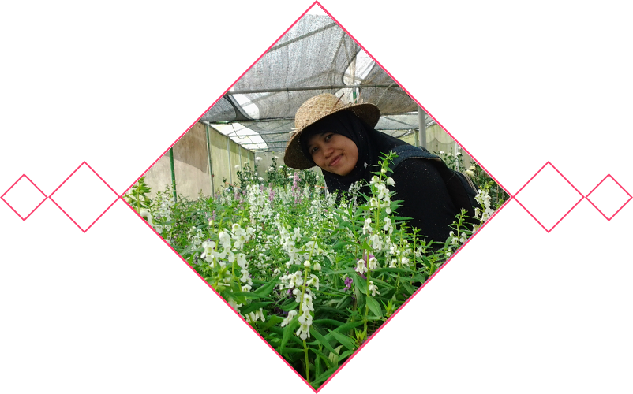

Biodata
Nama Lengkap
Nishfah Febriani Daulay
Tempat, Tanggal Lahir
Padangsidimpuan, 19 Februari 1992
Jenis Kelamin
Perempuan
Alamat
Karang Malang Blok E3 Sleman, Yogyakarta
Golongan Darah
O
Kewarganegaraan
Indonesia
Nishfah Febriani Daulay
Padangsidimpuan, 19 Februari 1992
Perempuan
Karang Malang Blok E3 Sleman, Yogyakarta
O
Indonesia